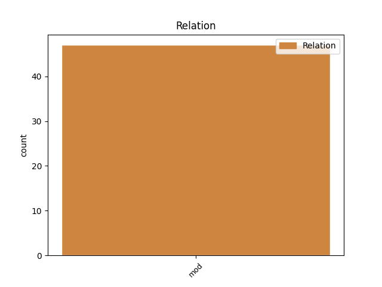
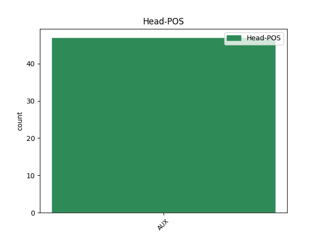
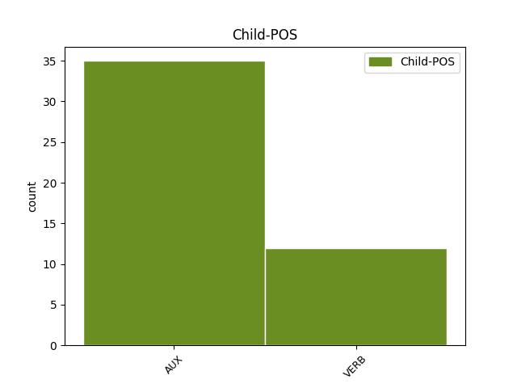

Distribution of features within this leaf



Agreement Rules sorted by frequency.
- When the dependent token is the modifer(mod) of the head token, and the head token is AUX and the dependent token is AUX.
1 اس _ _ _ _ 0 _ _ _
2 قانون _ _ _ _ 0 _ _ _
3 کے _ _ _ _ 0 _ _ _
4 تحت _ _ _ _ 0 _ _ _
5 پاکستان _ _ _ _ 0 _ _ _
6 کو _ _ _ _ 0 _ _ _
7 دی _ _ _ _ 0 _ _ _
8 جانے _ _ _ _ 0 _ _ _
9 والی _ _ _ _ 0 _ _ _
10 ڈیڑھ _ _ _ _ 0 _ _ _
11 بلین _ _ _ _ 0 _ _ _
12 ڈالرس _ _ _ _ 0 _ _ _
13 کی _ _ _ _ 0 _ _ _
14 غیرفوجی _ _ _ _ 0 _ _ _
15 امداد _ _ _ _ 0 _ _ _
16 کو _ _ _ _ 0 _ _ _
17 تین _ _ _ _ 0 _ _ _
18 گنا _ _ _ _ 0 _ _ _
19 کر _ _ _ _ 0 _ _ _
20 دیا _ _ _ _ 0 _ _ _
21 گیا _ _ _ _ 0 _ _ _
22 ہے ہے AUX VAUX Mood=Ind|Number=Sing|Person=3|Tense=Pres|VerbForm=Fin 0 _ _ _
23 ، _ _ _ _ 0 _ _ _
24 خاص _ _ _ _ 0 _ _ _
25 طور _ _ _ _ 0 _ _ _
26 پر _ _ _ _ 0 _ _ _
27 جمہوری _ _ _ _ 0 _ _ _
28 اداروں _ _ _ _ 0 _ _ _
29 کو _ _ _ _ 0 _ _ _
30 مستحکم _ _ _ _ 0 _ _ _
31 کرنے _ _ _ _ 0 _ _ _
32 پر _ _ _ _ 0 _ _ _
33 توجہ _ _ _ _ 0 _ _ _
34 دی _ _ _ _ 0 _ _ _
35 جائے _ _ _ _ 0 _ _ _
36 گی گا AUX VAUX Gender=Fem|Mood=Ind|Person=3|Tense=Fut|VerbForm=Fin 22 mod _ ChunkId=VGF2|ChunkType=child|Tam=gA|Vib=گا
37 اور _ _ _ _ 0 _ _ _
38 معاشی _ _ _ _ 0 _ _ _
39 ترقی _ _ _ _ 0 _ _ _
40 کو _ _ _ _ 0 _ _ _
41 فروغ _ _ _ _ 0 _ _ _
42 دینے _ _ _ _ 0 _ _ _
43 کی _ _ _ _ 0 _ _ _
44 تجویز _ _ _ _ 0 _ _ _
45 پیش _ _ _ _ 0 _ _ _
46 کی _ _ _ _ 0 _ _ _
47 گئی _ _ _ _ 0 _ _ _
48 ہے _ _ _ _ 0 _ _ _
49 ۔ _ _ _ _ 0 _ _ _
1 لہذا _ _ _ _ 0 _ _ _
2 منصب _ _ _ _ 0 _ _ _
3 امامت _ _ _ _ 0 _ _ _
4 پر _ _ _ _ 0 _ _ _
5 فائز _ _ _ _ 0 _ _ _
6 یہ _ _ _ _ 0 _ _ _
7 امت _ _ _ _ 0 _ _ _
8 جب _ _ _ _ 0 _ _ _
9 تک _ _ _ _ 0 _ _ _
10 انسانیت _ _ _ _ 0 _ _ _
11 کی _ _ _ _ 0 _ _ _
12 رہبری _ _ _ _ 0 _ _ _
13 نہیں _ _ _ _ 0 _ _ _
14 کرےگی کر VERB VM Gender=Fem|Mood=Ind|Number=Sing|Person=3|Tense=Fut|VerbForm=Fin|Voice=Act 22 mod _ ChunkId=VGF|ChunkType=head|Stype=declarative|Tam=gA|Vib=گا
15 اس _ _ _ _ 0 _ _ _
16 سرزمین _ _ _ _ 0 _ _ _
17 کی _ _ _ _ 0 _ _ _
18 اصلاح _ _ _ _ 0 _ _ _
19 ممکن _ _ _ _ 0 _ _ _
20 نہیں _ _ _ _ 0 _ _ _
21 ہو _ _ _ _ 0 _ _ _
22 سکےگی سک AUX VAUX Gender=Fem|Mood=Ind|Number=Sing|Tense=Fut|VerbForm=Fin 0 _ _ _
23 ۔ _ _ _ _ 0 _ _ _
Disagree Examples:
1 ہائی _ _ _ _ 0 _ _ _
2 کورٹ _ _ _ _ 0 _ _ _
3 نے _ _ _ _ 0 _ _ _
4 نوٹس _ _ _ _ 0 _ _ _
5 جاری _ _ _ _ 0 _ _ _
6 کرتے _ _ _ _ 0 _ _ _
7 ہوئے _ _ _ _ 0 _ _ _
8 کہا _ _ _ _ 0 _ _ _
9 کہ _ _ _ _ 0 _ _ _
10 ایڈیشنل _ _ _ _ 0 _ _ _
11 چیف _ _ _ _ 0 _ _ _
12 سکریٹری _ _ _ _ 0 _ _ _
13 بلونت _ _ _ _ 0 _ _ _
14 سنگھ _ _ _ _ 0 _ _ _
15 کے _ _ _ _ 0 _ _ _
16 خلاف _ _ _ _ 0 _ _ _
17 کیوں _ _ _ _ 0 _ _ _
18 نہ _ _ _ _ 0 _ _ _
19 تحقیر _ _ _ _ 0 _ _ _
20 عدالت _ _ _ _ 0 _ _ _
21 کی _ _ _ _ 0 _ _ _
22 کارروائی _ _ _ _ 0 _ _ _
23 کی _ _ _ _ 0 _ _ _
24 جائے جا AUX VAUX Mood=Sub|Number=Sing|VerbForm=Fin 0 _ _ _
25 جو _ _ _ _ 0 _ _ _
26 محکمہ _ _ _ _ 0 _ _ _
27 داخلہ _ _ _ _ 0 _ _ _
28 کی _ _ _ _ 0 _ _ _
29 قیادت _ _ _ _ 0 _ _ _
30 کرتے _ _ _ _ 0 _ _ _
31 ہےں ہے AUX VAUX Mood=Ind|Number=Plur|Person=3|Tense=Pres|VerbForm=Fin 24 mod _ ChunkId=VGF3|ChunkType=child|Tam=hE|Vib=ہے
32 انہیں _ _ _ _ 0 _ _ _
33 ہدایت _ _ _ _ 0 _ _ _
34 دی _ _ _ _ 0 _ _ _
35 گئی _ _ _ _ 0 _ _ _
36 ہے _ _ _ _ 0 _ _ _
37 کہ _ _ _ _ 0 _ _ _
38 وہ _ _ _ _ 0 _ _ _
39 11 _ _ _ _ 0 _ _ _
40 مئی _ _ _ _ 0 _ _ _
41 تک _ _ _ _ 0 _ _ _
42 اپنا _ _ _ _ 0 _ _ _
43 جواب _ _ _ _ 0 _ _ _
44 داخل _ _ _ _ 0 _ _ _
45 کریں _ _ _ _ 0 _ _ _
46 ۔ _ _ _ _ 0 _ _ _
1 رازدان _ _ _ _ 0 _ _ _
2 نے _ _ _ _ 0 _ _ _
3 کہا _ _ _ _ 0 _ _ _
4 کہ _ _ _ _ 0 _ _ _
5 بھوشن _ _ _ _ 0 _ _ _
6 اور _ _ _ _ 0 _ _ _
7 دیگر _ _ _ _ 0 _ _ _
8 تین _ _ _ _ 0 _ _ _
9 جوائنٹ _ _ _ _ 0 _ _ _
10 کمیٹی _ _ _ _ 0 _ _ _
11 ارکان _ _ _ _ 0 _ _ _
12 سیول _ _ _ _ 0 _ _ _
13 سوسائٹی _ _ _ _ 0 _ _ _
14 سے _ _ _ _ 0 _ _ _
15 تعلق _ _ _ _ 0 _ _ _
16 رکھتے _ _ _ _ 0 _ _ _
17 ہےں ہے AUX VAUX Mood=Ind|Number=Plur|Person=3|Tense=Pres|VerbForm=Fin 0 _ _ _
18 , _ _ _ _ 0 _ _ _
19 انہیں _ _ _ _ 0 _ _ _
20 تمام _ _ _ _ 0 _ _ _
21 شبہات _ _ _ _ 0 _ _ _
22 سے _ _ _ _ 0 _ _ _
23 بالاتر _ _ _ _ 0 _ _ _
24 ہونا _ _ _ _ 0 _ _ _
25 چاہئے چاہئے AUX VAUX Mood=Sub|VerbForm=Fin 17 mod _ ChunkId=VGF3|ChunkType=child|SpaceAfter=No|Tam=eM|Vib=ئےں
26 ۔ _ _ _ _ 0 _ _ _
1 اگر _ _ _ _ 0 _ _ _
2 آپ _ _ _ _ 0 _ _ _
3 کے _ _ _ _ 0 _ _ _
4 بزرگ _ _ _ _ 0 _ _ _
5 کو _ _ _ _ 0 _ _ _
6 اےک _ _ _ _ 0 _ _ _
7 خاص _ _ _ _ 0 _ _ _
8 وقت _ _ _ _ 0 _ _ _
9 مےں _ _ _ _ 0 _ _ _
10 دوا _ _ _ _ 0 _ _ _
11 لینی _ _ _ _ 0 _ _ _
12 ہے _ _ _ _ 0 _ _ _
13 تو _ _ _ _ 0 _ _ _
14 مطلوبہ _ _ _ _ 0 _ _ _
15 وقت _ _ _ _ 0 _ _ _
16 کے _ _ _ _ 0 _ _ _
17 لئے _ _ _ _ 0 _ _ _
18 الارم _ _ _ _ 0 _ _ _
19 لگا _ _ _ _ 0 _ _ _
20 دیں دے AUX VAUX Gender=Fem|Mood=Sub|Number=Plur|VerbForm=Fin 0 _ _ _
21 جب _ _ _ _ 0 _ _ _
22 وہ _ _ _ _ 0 _ _ _
23 الارم _ _ _ _ 0 _ _ _
24 کو _ _ _ _ 0 _ _ _
25 بند _ _ _ _ 0 _ _ _
26 کرنے _ _ _ _ 0 _ _ _
27 کے _ _ _ _ 0 _ _ _
28 لئے _ _ _ _ 0 _ _ _
29 ٹائمر _ _ _ _ 0 _ _ _
30 کے _ _ _ _ 0 _ _ _
31 پاس _ _ _ _ 0 _ _ _
32 آئیں_گے _ _ _ _ 0 _ _ _
33 تو _ _ _ _ 0 _ _ _
34 وہاں _ _ _ _ 0 _ _ _
35 آپ _ _ _ _ 0 _ _ _
36 کا _ _ _ _ 0 _ _ _
37 رکھا _ _ _ _ 0 _ _ _
38 ہوا _ _ _ _ 0 _ _ _
39 نوٹ _ _ _ _ 0 _ _ _
40 مل _ _ _ _ 0 _ _ _
41 جائےگا جا AUX VAUX Gender=Masc|Mood=Ind|Number=Sing|Person=3|Tense=Fut|VerbForm=Fin 20 mod _ ChunkId=VGF4|ChunkType=child|Tam=gA|Vib=گا
42 جس _ _ _ _ 0 _ _ _
43 پر _ _ _ _ 0 _ _ _
44 لکھا _ _ _ _ 0 _ _ _
45 ہوگا _ _ _ _ 0 _ _ _
46 ۔ _ _ _ _ 0 _ _ _
47 '' _ _ _ _ 0 _ _ _
48 دوا _ _ _ _ 0 _ _ _
49 لے _ _ _ _ 0 _ _ _
50 لیں _ _ _ _ 0 _ _ _
51 ' _ _ _ _ 0 _ _ _
52 وقت _ _ _ _ 0 _ _ _
53 ہو _ _ _ _ 0 _ _ _
54 گیا _ _ _ _ 0 _ _ _
55 ہے _ _ _ _ 0 _ _ _
56 '' _ _ _ _ 0 _ _ _
57 اس _ _ _ _ 0 _ _ _
58 کے _ _ _ _ 0 _ _ _
59 ساتھ _ _ _ _ 0 _ _ _
60 ہی _ _ _ _ 0 _ _ _
61 آپ _ _ _ _ 0 _ _ _
62 ٹائمر _ _ _ _ 0 _ _ _
63 کے _ _ _ _ 0 _ _ _
64 پاس _ _ _ _ 0 _ _ _
65 ان _ _ _ _ 0 _ _ _
66 کی _ _ _ _ 0 _ _ _
67 دوا _ _ _ _ 0 _ _ _
68 بھی _ _ _ _ 0 _ _ _
69 رکھ _ _ _ _ 0 _ _ _
70 دیں _ _ _ _ 0 _ _ _
71 تاکہ _ _ _ _ 0 _ _ _
72 انہیں _ _ _ _ 0 _ _ _
73 پریشانی _ _ _ _ 0 _ _ _
74 نہ _ _ _ _ 0 _ _ _
75 ہو _ _ _ _ 0 _ _ _
76 ۔ _ _ _ _ 0 _ _ _
1 اگر _ _ _ _ 0 _ _ _
2 آپ _ _ _ _ 0 _ _ _
3 کے _ _ _ _ 0 _ _ _
4 بزرگ _ _ _ _ 0 _ _ _
5 کو _ _ _ _ 0 _ _ _
6 اےک _ _ _ _ 0 _ _ _
7 خاص _ _ _ _ 0 _ _ _
8 وقت _ _ _ _ 0 _ _ _
9 مےں _ _ _ _ 0 _ _ _
10 دوا _ _ _ _ 0 _ _ _
11 لینی _ _ _ _ 0 _ _ _
12 ہے _ _ _ _ 0 _ _ _
13 تو _ _ _ _ 0 _ _ _
14 مطلوبہ _ _ _ _ 0 _ _ _
15 وقت _ _ _ _ 0 _ _ _
16 کے _ _ _ _ 0 _ _ _
17 لئے _ _ _ _ 0 _ _ _
18 الارم _ _ _ _ 0 _ _ _
19 لگا _ _ _ _ 0 _ _ _
20 دیں _ _ _ _ 0 _ _ _
21 جب _ _ _ _ 0 _ _ _
22 وہ _ _ _ _ 0 _ _ _
23 الارم _ _ _ _ 0 _ _ _
24 کو _ _ _ _ 0 _ _ _
25 بند _ _ _ _ 0 _ _ _
26 کرنے _ _ _ _ 0 _ _ _
27 کے _ _ _ _ 0 _ _ _
28 لئے _ _ _ _ 0 _ _ _
29 ٹائمر _ _ _ _ 0 _ _ _
30 کے _ _ _ _ 0 _ _ _
31 پاس _ _ _ _ 0 _ _ _
32 آئیں_گے _ _ _ _ 0 _ _ _
33 تو _ _ _ _ 0 _ _ _
34 وہاں _ _ _ _ 0 _ _ _
35 آپ _ _ _ _ 0 _ _ _
36 کا _ _ _ _ 0 _ _ _
37 رکھا _ _ _ _ 0 _ _ _
38 ہوا _ _ _ _ 0 _ _ _
39 نوٹ _ _ _ _ 0 _ _ _
40 مل _ _ _ _ 0 _ _ _
41 جائےگا _ _ _ _ 0 _ _ _
42 جس _ _ _ _ 0 _ _ _
43 پر _ _ _ _ 0 _ _ _
44 لکھا _ _ _ _ 0 _ _ _
45 ہوگا _ _ _ _ 0 _ _ _
46 ۔ _ _ _ _ 0 _ _ _
47 '' _ _ _ _ 0 _ _ _
48 دوا _ _ _ _ 0 _ _ _
49 لے _ _ _ _ 0 _ _ _
50 لیں لے AUX VAUX Mood=Sub|Number=Plur|VerbForm=Fin 0 _ _ _
51 ' _ _ _ _ 0 _ _ _
52 وقت _ _ _ _ 0 _ _ _
53 ہو _ _ _ _ 0 _ _ _
54 گیا _ _ _ _ 0 _ _ _
55 ہے ہے AUX VAUX Mood=Ind|Number=Sing|Person=3|Tense=Pres|VerbForm=Fin 50 mod _ ChunkId=VGF7|ChunkType=child|SpaceAfter=No|Tam=hE|Vib=ہے
56 '' _ _ _ _ 0 _ _ _
57 اس _ _ _ _ 0 _ _ _
58 کے _ _ _ _ 0 _ _ _
59 ساتھ _ _ _ _ 0 _ _ _
60 ہی _ _ _ _ 0 _ _ _
61 آپ _ _ _ _ 0 _ _ _
62 ٹائمر _ _ _ _ 0 _ _ _
63 کے _ _ _ _ 0 _ _ _
64 پاس _ _ _ _ 0 _ _ _
65 ان _ _ _ _ 0 _ _ _
66 کی _ _ _ _ 0 _ _ _
67 دوا _ _ _ _ 0 _ _ _
68 بھی _ _ _ _ 0 _ _ _
69 رکھ _ _ _ _ 0 _ _ _
70 دیں _ _ _ _ 0 _ _ _
71 تاکہ _ _ _ _ 0 _ _ _
72 انہیں _ _ _ _ 0 _ _ _
73 پریشانی _ _ _ _ 0 _ _ _
74 نہ _ _ _ _ 0 _ _ _
75 ہو _ _ _ _ 0 _ _ _
76 ۔ _ _ _ _ 0 _ _ _
1 اگر _ _ _ _ 0 _ _ _
2 آپ _ _ _ _ 0 _ _ _
3 کے _ _ _ _ 0 _ _ _
4 بزرگ _ _ _ _ 0 _ _ _
5 کو _ _ _ _ 0 _ _ _
6 اےک _ _ _ _ 0 _ _ _
7 خاص _ _ _ _ 0 _ _ _
8 وقت _ _ _ _ 0 _ _ _
9 مےں _ _ _ _ 0 _ _ _
10 دوا _ _ _ _ 0 _ _ _
11 لینی _ _ _ _ 0 _ _ _
12 ہے _ _ _ _ 0 _ _ _
13 تو _ _ _ _ 0 _ _ _
14 مطلوبہ _ _ _ _ 0 _ _ _
15 وقت _ _ _ _ 0 _ _ _
16 کے _ _ _ _ 0 _ _ _
17 لئے _ _ _ _ 0 _ _ _
18 الارم _ _ _ _ 0 _ _ _
19 لگا _ _ _ _ 0 _ _ _
20 دیں _ _ _ _ 0 _ _ _
21 جب _ _ _ _ 0 _ _ _
22 وہ _ _ _ _ 0 _ _ _
23 الارم _ _ _ _ 0 _ _ _
24 کو _ _ _ _ 0 _ _ _
25 بند _ _ _ _ 0 _ _ _
26 کرنے _ _ _ _ 0 _ _ _
27 کے _ _ _ _ 0 _ _ _
28 لئے _ _ _ _ 0 _ _ _
29 ٹائمر _ _ _ _ 0 _ _ _
30 کے _ _ _ _ 0 _ _ _
31 پاس _ _ _ _ 0 _ _ _
32 آئیں_گے _ _ _ _ 0 _ _ _
33 تو _ _ _ _ 0 _ _ _
34 وہاں _ _ _ _ 0 _ _ _
35 آپ _ _ _ _ 0 _ _ _
36 کا _ _ _ _ 0 _ _ _
37 رکھا _ _ _ _ 0 _ _ _
38 ہوا _ _ _ _ 0 _ _ _
39 نوٹ _ _ _ _ 0 _ _ _
40 مل _ _ _ _ 0 _ _ _
41 جائےگا جا AUX VAUX Gender=Masc|Mood=Ind|Number=Sing|Person=3|Tense=Fut|VerbForm=Fin 0 _ _ _
42 جس _ _ _ _ 0 _ _ _
43 پر _ _ _ _ 0 _ _ _
44 لکھا _ _ _ _ 0 _ _ _
45 ہوگا _ _ _ _ 0 _ _ _
46 ۔ _ _ _ _ 0 _ _ _
47 '' _ _ _ _ 0 _ _ _
48 دوا _ _ _ _ 0 _ _ _
49 لے _ _ _ _ 0 _ _ _
50 لیں _ _ _ _ 0 _ _ _
51 ' _ _ _ _ 0 _ _ _
52 وقت _ _ _ _ 0 _ _ _
53 ہو _ _ _ _ 0 _ _ _
54 گیا _ _ _ _ 0 _ _ _
55 ہے _ _ _ _ 0 _ _ _
56 '' _ _ _ _ 0 _ _ _
57 اس _ _ _ _ 0 _ _ _
58 کے _ _ _ _ 0 _ _ _
59 ساتھ _ _ _ _ 0 _ _ _
60 ہی _ _ _ _ 0 _ _ _
61 آپ _ _ _ _ 0 _ _ _
62 ٹائمر _ _ _ _ 0 _ _ _
63 کے _ _ _ _ 0 _ _ _
64 پاس _ _ _ _ 0 _ _ _
65 ان _ _ _ _ 0 _ _ _
66 کی _ _ _ _ 0 _ _ _
67 دوا _ _ _ _ 0 _ _ _
68 بھی _ _ _ _ 0 _ _ _
69 رکھ _ _ _ _ 0 _ _ _
70 دیں دے AUX VAUX Mood=Sub|Number=Plur|VerbForm=Fin 41 mod _ ChunkId=VGF8|ChunkType=child|Tam=eM|Vib=ئےں
71 تاکہ _ _ _ _ 0 _ _ _
72 انہیں _ _ _ _ 0 _ _ _
73 پریشانی _ _ _ _ 0 _ _ _
74 نہ _ _ _ _ 0 _ _ _
75 ہو _ _ _ _ 0 _ _ _
76 ۔ _ _ _ _ 0 _ _ _